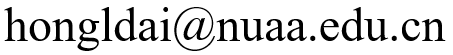

I am an associate professor at the Nanjing University of Aeronautics and Astronautics. Previously, I worked at ByteDance and Tencent Jarvis Lab (2021-2023). I received my PhD degree in CS from the Hong Kong University of Science and Technology in 2021 under the advising of Prof. Yangqiu Song. I obtained my Master's degree from Zhejiang University, and Bachelor's degree from Harbin Institute of Technology.
My research focuses on Information Extraction, weak or limited supervision in NLP, PLMs, LLMs.
Email:

Selected Publications
- From Ultra-Fine to Fine: Fine-tuning Ultra-Fine Entity Typing Models to Fine-grained
Hongliang Dai and Ziqian Zeng. ACL, 2023. [PDF] [Code] - Ultra-Fine Entity Typing with Weak Supervision from a Masked Language Model
Hongliang Dai, Yangqiu Song, Haixun Wang. ACL, 2021. [PDF] [Code] - Exploiting Semantic Relations for Fine-grained Entity Typing
Hongliang Dai, Yangqiu Song, Xin Li. AKBC, 2020. [PDF] [Code] - Improving Fine-grained Entity Typing with Entity Linking
Hongliang Dai, Donghong Du, Xin Li, Yangqiu Song. EMNLP, 2019. [PDF] [Code] - Neural Aspect and Opinion Term Extraction with Mined Rules as Weak Supervision
Hongliang Dai and Yangqiu Song. ACL, 2019. [PDF] [Code] - Entity Linking within a Social Media Platform: A Case Study on Yelp
Hongliang Dai, Yangqiu Song, Liwei Qiu, and Rijia Liu. EMNLP, 2018. [PDF] [Code] - Entity Mention Aware Document Representation
Hongliang Dai, Siliang Tang, Fei Wu, and Yueting Zhuang. Information Sciences, 2018. [Code] - A Chinese Corpus for Fine-grained Entity Typing
Chin Lee, Hongliang Dai, Yangqiu Song, Xin Li. LREC, 2020. [Code] - ConsistentEE: A Consistent and Hardness-Guided Early Exiting Method for Accelerating Language Models Inference
Ziqian Zeng, Yihuai Hong, Hongliang Dai, Huiping Zhuang, Cen Chen. AAAI, 2024. - Multi-Source Multi-Type Knowledge Exploration and Exploitation for Dialogue Generation
Xuanfan Ni, Hongliang Dai, Zhaochun Ren, and Piji Li. EMNLP, 2023.
南京航空航天大学特聘副研究员、副教授，硕导。此前曾就职于字节跳动和腾讯天衍实验室(2021-2023)。2021年在香港科技大学获博士学位，导师是 Prof. Yangqiu Song。分别在浙江大学和哈尔滨工业大学获硕士和学士学位。主持国家自然科学基金青年基金项目。
研究方向：信息抽取、NLP中的小样本学习和弱监督训练、预训练模型、大模型。
Email:
部分论文
- From Ultra-Fine to Fine: Fine-tuning Ultra-Fine Entity Typing Models to Fine-grained
Hongliang Dai and Ziqian Zeng. ACL, 2023. [PDF] - Ultra-Fine Entity Typing with Weak Supervision from a Masked Language Model
Hongliang Dai, Yangqiu Song, Haixun Wang. ACL, 2021. [PDF] - Exploiting Semantic Relations for Fine-grained Entity Typing
Hongliang Dai, Yangqiu Song, Xin Li. AKBC, 2020. [PDF] [Code] - Improving Fine-grained Entity Typing with Entity Linking
Hongliang Dai, Donghong Du, Xin Li, Yangqiu Song. EMNLP, 2019. [PDF] [Code] - Neural Aspect and Opinion Term Extraction with Mined Rules as Weak Supervision
Hongliang Dai and Yangqiu Song. ACL, 2019. [PDF] [Code] - Entity Linking within a Social Media Platform: A Case Study on Yelp
Hongliang Dai, Yangqiu Song, Liwei Qiu, and Rijia Liu. EMNLP, 2018. [PDF] [Code] - Entity Mention Aware Document Representation
Hongliang Dai, Siliang Tang, Fei Wu, and Yueting Zhuang. Information Sciences, 2018. [Code] - A Chinese Corpus for Fine-grained Entity Typing
Chin Lee, Hongliang Dai, Yangqiu Song, Xin Li. LREC, 2020. [Code] - ConsistentEE: A Consistent and Hardness-Guided Early Exiting Method for Accelerating Language Models Inference
Ziqian Zeng, Yihuai Hong, Hongliang Dai, Huiping Zhuang, Cen Chen. AAAI, 2024. - Multi-Source Multi-Type Knowledge Exploration and Exploitation for Dialogue Generation
Xuanfan Ni, Hongliang Dai, Zhaochun Ren, and Piji Li. EMNLP, 2023.